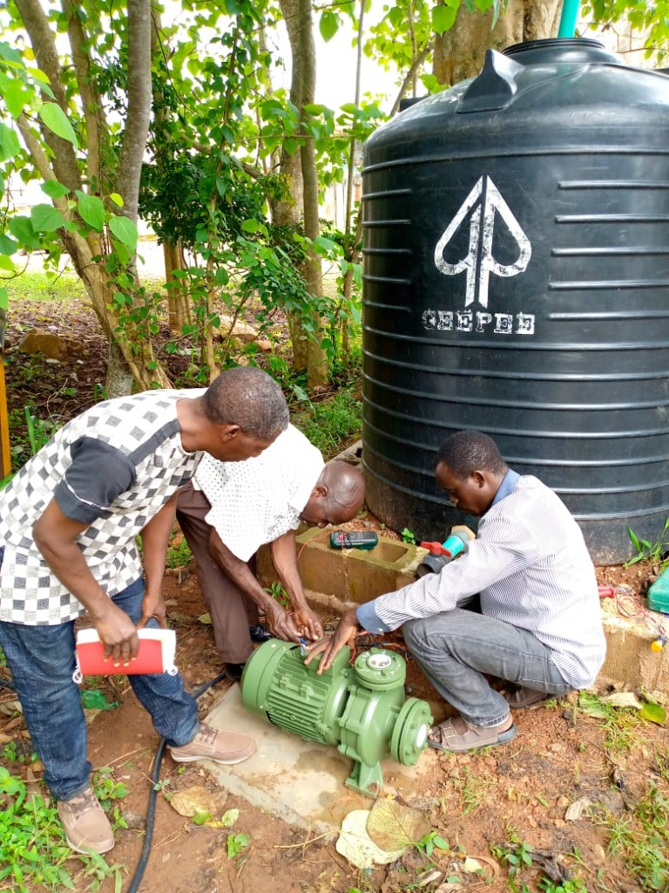

Our Projects in Action
Tracking our progress toward long-term water independence, biological restoration, and clean community power.
Deployment Timeline & Key Achievements
From initial site surveys to fully operational solar water infrastructure, see how each project progresses.
Clean Water for All Initiative
Implemented solar-powered deep boreholes and high-capacity storage reservoirs to provide uninterrupted clean water access to over 10,000 residents in drought-affected valleys.
Community Awareness & Water Conservation
Launched widespread educational campaigns focusing on micro-irrigation, domestic water recycling, and municipal waste reduction to prevent industrial contamination of natural aquifers.
Environmental Stewardship Workshops
Partnered with 24 schools to integrate environmental stewardship into the curriculum, installing clean handwashing stations and youth-led nursery gardens.
Biological River Corridor Replanting
Mobilized 100+ local volunteers and agricultural cooperatives to plant 15,000 native trees, reversing topsoil depletion and cooling vulnerable regional water catchments.
Community Agroforestry & Green Grids
Completed multi-tier shade crop plots and solar irrigation pumps, ensuring water retention, natural windbreaks, and zero carbon footprint for local farmers.
The Southern District Clean Water Grid
A flagship model demonstrating how solar technology and ecological protection combine to transform vulnerable regions.

Ending 15 Years of Chronic Water Stress
Before our intervention, women and schoolchildren walked an average of 4.5 hours daily across arid terrain to collect untreated surface water. Chronic water-borne disease kept school attendance below 48%.
IWEREF engineered high-capacity submersible boreholes paired with black storage reservoirs, electric pressure pumps, and distribution kiosks across rural settlements. School attendance surged to 92%, and waterborne illnesses plummeted by over 85% within six months.
Field Deployments & Evidence
Visual documentation of our ongoing water infrastructure, community reforestation, and school outreach programs.
Help Fund Our Next Project Deployment
We have three pending project proposals awaiting funding to supply clean water to over 15,000 more villagers.